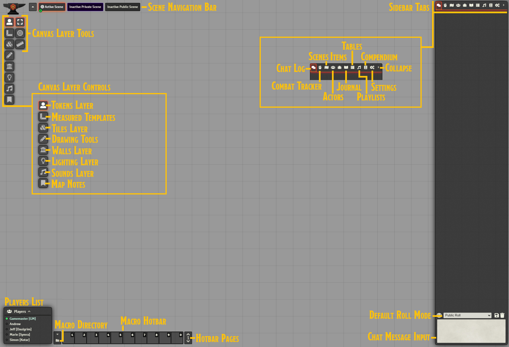
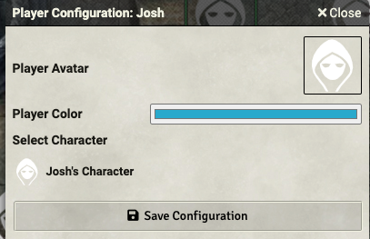
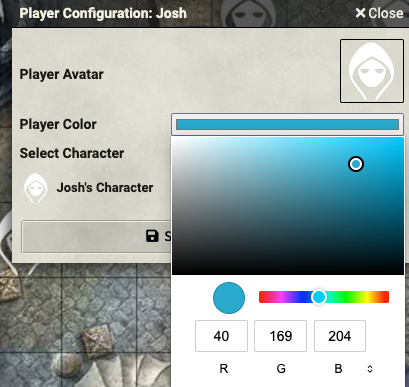

Foundry 101¶
System Requirements¶
Foundry is a modern application that runs in a browser window; as such, you should make sure that your machine can run it.
Relatively modern computer running Windows 10, MacOS, or Linux operating systems with support for 64-bit architecture.
An integrated GPU to enable hardware acceleration.
8GB of RAM
A monitor no smaller than 1366x768. At this minimum resolution many aspects of the UI will feel cramped.
A modern web browser like Chrome, Firefox, Opera, or Edge with hardware acceleration enabled. (Safari is not a supported browser at this time).
— Source
Logging In¶
Foundry can be run in a variety of configurations. Mine is on a self-hosted server that is almost always on.
To join a game, navigate to the URL in your browser and select the user name the GM assigned to you. You probably do not need an access key (password). If you were assigned one, the GM should have told you and you would enter it here.
Play Area Overview¶
Foundry operates within a canvas, or play area. There are three main areas you need to be concerned about as a player: the Canvas Layer Tools, the Sidebar and its Tabs, and the Macro and players area.
Canvas Layer Tools¶
The toolbar on the Left has two columns: the leftmost column is the tool, and the rightmost column are options within that tool.
The top icon, the Token icon, is where you can select your token and move it, use Targeting, or to Measure Distance. The middle icon is the Spell Templates function. The Pencil icon is the Draw Shape function.
Sidebar and tabs¶
The sidebar has several tabs. You can collapse the sidebar then drag any table out into its own window. This is especially useful for combat.
- Bubble
The chat tab, where the dice rolling will happen.
- Fist
The combat tracker.
- Group of People
The Actors you can see in the game; your own PC and any minions are here, and can be edited when you click on them.
- The Briefcase
The game’s items. The GM may put special items here and you can reference them.
- Open Book
Journal entries for the scene. You can even create your own.
- Tables
Randomized tables. You probably don’t need to worry about this.
- Music
Music settings. I don’t use music.
- Book
Compendiums. These are groups of items or actors that have been shared with you. They include spells, feats, actors, items, and macros. This is a great area to look up spells, conditions, etc.
- Gears
Player settings. You can change the UI skin, help solve frame rate issues, and other basic options.
- Arrow
Collapses Menu
Player Avatars¶
After logging in, you will be directed to choose your player avatar. The default is a mysterious, hooded person. I tend to make players trusted, so you can upload your own character avatar. If the GM has already set up a PC for you (in most cases I do), you can click “save configuration” and your token will be highlighted.
You can also click on the “Playr Color” option to select a custom color for your character. This color will be used whne you draw on the screen, etc.
Uploading a new Avatar Image¶
To upload a new avatar, do the following:
Click on the avatar image
Click on “User Data” at the top of the image browser (this should be the default)
Click on “dragupload”
Click “Choose File”
Click “Select File”
You can only upload files to the dragupload folder!
I do not want players managing my other assets; you can view and use some assets other folders (such as PC Art), but you cannot write to those directories. I will move your token to the directories for use later on.
Choosing an Existing Avatar Image¶
I have a library of images from previous games, and they are ready to share with you! If you played with me before, it’s likely I moved your uploaded tokens to the correct folder as well.
Click on the avatar image
Click on the “Up” arrow until you see “assets”
Click on “assets”
Click on “PC Art”
Select your token (note that there are a variety of view options next to “Display Mode” so you can see previews of the image)
Click “Select File”
Creating Your PC¶
This section covers how to create your token and character sheet.
Creating Actors¶
One of the most fundamental entities within Foundry Virtual Tabletop is the Actor. Actors are the protagonists, allies, monsters, antagonists, and persons within the World that you create. The game System being used has control to define the exact types of actors which are relevant for it’s gameplay, but for most tabletop roleplaying systems these actors will represent the characters which the player Users impersonate and the foes they encounter.
You have permission to create your own PC — an actor! Here’s how to do that:
Clicking on the icon in the sidebar that that looks like a group of people.
At the bottom click “Create Actor”
Name your PC
leave “character” selected as its type
Click “Create Actor”
Creating your Token¶
After you create the Actor, you can double-click on it in the Actors sidebar to edit it and create a token. A Token represents the piece on the Game Board, and has several important settings. (If you just created a new actor, you will immediately be taken to the Character Sheet screen). To create a token for your PC, use the following steps:
Click on “Prototype token” in the character sheet (A “prototype token” is one that has not been placed on the board yet)
Name the token however you want (this should already be correct)
Select “hover” on “Display Name” so others can see your token’s name.
Click on “Image”
Select the image (follow steps outlined in Choosing an Existing Avatar Image using the file browser, or the steps in Uploading a new Avatar Image)
Click on “vision”
If you have Darkvision enter its feet under “dim vision”
If you normal have a light source in dark areas, enter its radius in the dim and bright fields under “Emit Dim” and “Emit Bright”. Both sources come from your token, so a Light spell that emits 20 feet of bright light and 20 feet of dim light should be set to 40 feet of dim and 20 feet of bright (which overlaps the dim).
Click “Update Token.”
Player Tokens Should Always be Round!
Many GMs — myself included — prefer to designate PCs and NPC tokens via shapes. This allows the user to quickly identify a fellow PC’s token on the board, and an NPC’s. In my games, NPCs should always be square, and PCs should always be round.
Changing your Actor’s Avatar¶
Your character can have different art from its token. This art will also show up in the “Actors” pane and on the sheet. This is true for any Actor, in fact. To add or change an actor’s avatar, use the following steps:
Open the character sheet
Click on the big avatar image
Select the image or upload an image (follow steps outlined in Choosing an Existing Avatar Image using the file browser, or the steps in Uploading a new Avatar Image)
Adding your Character Token to the Map¶
You can now drag your token onto the map, and it will have the correct settings. If the GM has the map set with darkness (such as nighttime or in a cavern) you will only see a black screen and a warning. Just drag your token onto the map if the GM hasn’t done so for you.
If you want to change these settings on the token for just one map, double-click on the token and adjust the vision under the “token” window. If you want to update the token’s settings so you can use it again later, update the prototype token under the Actors pane so it’s always set correctly.
The examples here are for Pathfinder 2e, but 1e will have a similar process.
Editing Your Character Sheet¶
You can edit your character. This can be exported later on to port between Foundry games. However, for my games I do not require a complete character sheet — we use the honor system here. However, there are some useful things you can add.
Hit Points¶
You can edit hit points to track them in combat. To do so:
Open character sheet
Add your Level
Add your Constitution
Add your Ancestry HP
Add your Class HP
Add your bonus HP and Bonus HP/level (Toughness, etc)
Add your Current HP (match the Total HP)
You should see a full health bar under your token
Adjusting Hit Points¶
You can adjust the hit points in a variety of ways.
Right click on the token
Enter the damage or a negative integer under the health bar to take damage. Add a “+” sign to get healed
Hit enter
The health bar will be updated. This can give players a visual clue about your health without metagaming too much
;.. raw:: html
<div style=’position:relative; padding-bottom:calc(56.25% + 44px)’><iframe src=’https://gfycat.com/ifr/constantshabbyaruanas?autoplay=0’ frameborder=’0’ scrolling=’no’ width=’100%’ height=’100%’ style=’position:absolute;top:0;left:0;’ allowfullscreen></iframe></div>
Initiative Modifier¶
I like to roll initiatives with a macro that rolls for everyone and sots it — this means it’s helpful to add your initiative mod to your sheet.
Select the ability used under Initiative
Fill out that part of the sheet
Select Proficiency if Perception (left click to increase, right to decrease)
Add any bonuses from feats, etc (for example, Battlefield Surveyor for fighter)
Close Sheet
Rolling Dice¶
To roll dice go to the chat log. It’s the bubble on the rightmost side. Then, type your command prefixed by “/roll”:
/roll 1d20+14+2
You can do very simple macros that combine attack and damage. Here is an example of a character with a striking flail with crit specialization, and sneak attack:
I attack with my flail to hit AC [[1d20+14]]
for [[2d8+4]] slashing damage
and [[2d6]] sneak if flat-footed
and prone if crit
You could integrate deadly, fatal, and anything else you like here.
Macros¶
Macros are useful tools. The above attack and damage example is an example of a macro.
You can edit your own macros on the hotbar. You can also add them from compendiums that you have access to (note that some compendium macros may require you to have your character sheet fully set up). The main goal here is to get you started with fast, simple macros and not to do anything overly complex. Macros are very powerful, and get complex fast!
Building a Macro¶
Click on the hotbar. If there’s already a macro there, right-click to edit or remove.
Name the Macro
Enter the macro type (“chat” is the default and works fins for simple macros; “script” is a javascript macro)
Select the macro image (there are images available in the default library)
Enter the Macro Text
Click “Execute Macro” to test
Click Save Macro if it works
You can use the macro by tapping the number on your keypad or clicking it
Using a Compendium Macro¶
Click on the Compendium area on the right sidebar
Scroll down the the Macros section
Click on the category. A new window will open.
Click on the macro you want to use in order to preview it
Drag the macro you want to your hotbar
Right-click and edit the macro to your liking, or click on it to execute it
The GM may make a variety of compendiums available. I have a default set of simple attack/damage with multiple attack penalties, saves, and perception.
Playing the Game¶
Movement on the Map¶
You can drag your token anywhere you like. If you command-click on the token (control-click on windows), you can measure distance. If you click multiple times you can set waypoints. Press the space bar when you are ready to move, or right-click to reset.
Highlight a Target¶
Click on the Target icon on the left. Click on the token you ant to target. This will highlight it on the map for you.
Measure Distance¶
Click on the ruler icon and drag out the distance. As with ;:ref:Movement on the Map, you can command/control click to set up waypoints.
Spell Templates¶
Select the right-angle ruler in the toolbar on the left, then select the type of spell. There is a circle for bursts, an angle for cones, a square for concurrent surface area, and an arrow for lines. Once you have the template dragges out, you can move it around. You can select the template to delete it when you’re finished.
Don’t forget to delete the template when you’re done, and that unless you select abother tool Foundry will assume you want to add more templates.
Drawing Shapes¶
You can draw boxes, squiggles, text, and more:
Journal Notes¶
If your GM has entered any journal notes for the area, you can click on this icon to highlight them. Double click on the journal icon to opn it up.